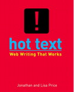
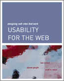
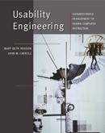

Web workTom Brinck, Darren Gergle and Scott D. Wood, Designing Web sites that work: usability for the Web. San Francisco, CA: Morgan Kaufmann, 2002. xiii, 481 pp. ISBN 1 55860 658 0 $49.95;Jonathan Price & Lisa Price, Hot text: Web writing that works. Indianapolis, IN: New Riders, 2002. xv, 507 pp. ISBN 1 7357 1151 8 $40.00; £30.99;Mary Beth Rosson & John M. Carroll, Usability engineering: scenario-based development of human-computer interaction. San Francisco, CA: Morgan Kaufmann, 2002. xxi, 423 pp. ISBN 1 55860 712 9 $??Tammy Sachs & Gary McClain, Back to the user: creating user-focused Web sites Indianapolis, IN: New Riders, 2002. xix, 360 pp. ISBN 1 7357 1118 6 $34.99, £27.50The Web design CD bookshelf. Version 1.0. Sebastapol, CA: O'Reilly and associates, 1999-2001. CD-ROM. ISBN 0 596 00271 8 $79.95 plus Web design in a nutshell, 2nd ed. by Jennifer Niederst, xix, 618 pp. ISBN 0 596 00196 7.Inevitably, just as programming generated an entire publishing industry, including new entrants with unfamiliar names, so the World Wide Web has generated, or re-generated, a similar proliferation of output, with publishing companies eating one another up in an attempt to get maximum market share. Given the volume of output, just about the only way to deal with it sensibly is to group the books into packs and evaluate them on a comparative basis. All of the books review here deal with one or another aspect of creating effective Web sites - mostly with the major audience of business in mind. One (Jonathan and Lisa Price) deals specifically with writing for the Web; two deal with usability; one with how people use the Web and the design consequences; and the CD-ROM with just about everything from HTML and XHTML to cascading style sheets and Web audio. This categorisation suggest how we might cope with them in a review. Web writingFirst, Price and Price, are journalists who have worked as technical writers, journalists on computer magazines, Web designers and just about everything else that makes their experience useful to the beginner. Their instruction is directed to any writer who is helping to produce Web sites, although the emphasis is on the needs of commercial sites. The book has four sections, Catch the Net spirit, Write like a human being, Fine-tune your style for the genres, and Become a pro. The book concludes with a 'Backup' section of Web sites relating to Web writing, and a bibliography, 'If you like to read'. The style of the book aids assimilation of the ideas, with quotations in side-panels, bullet points, illustrations, examples and the occasional case-study. Much of the advice is simply about good writing for any purpose, and the 'Write like a human being' section contains most of this, with injunctions to reduce the amount of text, use short paragraphs, fitering out hyperbole and so on. However, much of the guidance relates to the fact that the Web writer is designing specifically for the screen: avoid scrolling if possible, use headings and illustrations, make links emphatic, use menus that are intelligible, and more. This is a highly practical text and one that will help any budding Web author to develop his or her skills. It's a pity that the 'Backup' section of Web sites was not placed on the New Riders Web site - it would have been possible to keep it up to date there. UsabilityThe 'guru' of usability is Jakob Nielsen and his 'Designing Web usability' was reviewed here recently. One of the books on usability (Brinck et al.) is a direct competitor, and has a lot in common with Nielsen's book. The other, by Rosson and Carroll, is a text-book on the more general theme of human-computer interaction. Both come from the Morgan Kaufmann stable, which is more or less a guarantee of a well-designed book. 'Usability' is defined in similar ways in both books: for Rosson and Carroll it is: ...the quality of a system with respect to ease of learning, ease of use, and user satisfaction while for Brinck et al. it is: ...the degree to which people (users) can perform a set of required tasks. They go on to add that it is the product of sometimes conflicting design goals, i.e., that the system should be: functionally correct, efficient to use, easy to learn, easy to remember, tolerant of error, and subjectively pleasing. Within these definitions, the authors of the two texts take different tacks, relating to the different areas of human-computer interaction with which they are concerned. The more general of the two (Rosson and Carroll) adopts a 'scenario-based' approach to usability, that is, writing stories about people carrying out some activity that involves computer use. Professor Tom Wilson
|